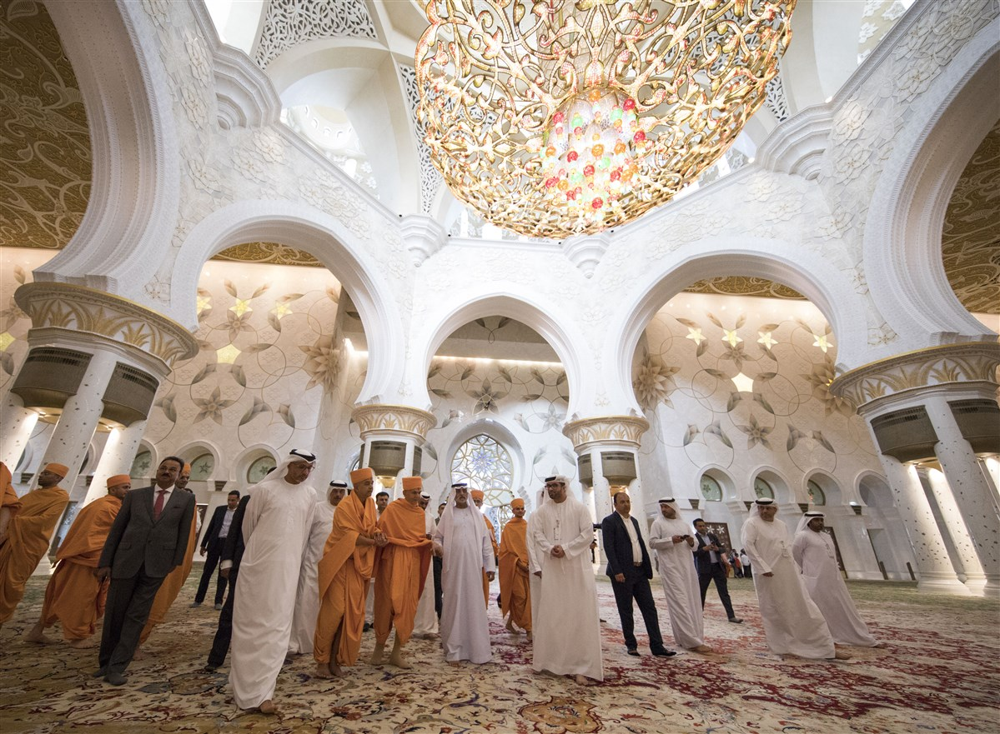
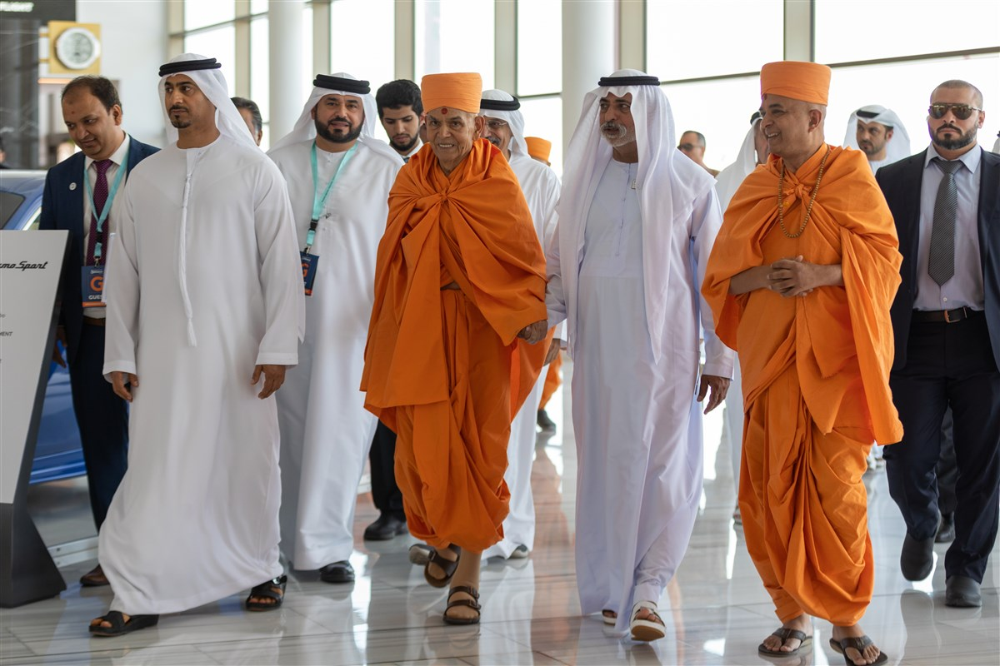

Mahant Swami Maharaj
Mahant Swami Maharaj Visits the Grand Mosque with HE Sheikh Nahyan bin Mubarak Al Nahyan | Abu Dhabi, UAE | April 2019
HE Sheikh Nahyan Mabarak Al Nahyan escorts Swamishri towards the airport terminal | Dubai, UAE | April 2019
His Holiness Mahant Swami Maharaj (Swami Keshavjivandasji) is the sixth and present spiritual guru of the BAPS Swaminarayan Sanstha. Devotees are to consider him the example of all the ideals of the religion; he is to be viewed as the first disciple, most faithful in his observance of the commandments, most active in propagation of the religion, the best interpreter of the meaning of the scriptures. His conduct is hence to be considered as that of the "ideal saint" and "perfect bhakta (devotee)", providing a tangible and graspable example for the spiritual aspirant to follow. Devotees are to view his respect for his gurus (Yogiji Maharaj and Pramukh Swami Maharaj) to be the model of devotion to one's guru.
Pramukh Swami Maharaj had known that Mahant Swami would be his successor when the latter received initiation in 1957. On 20 July 2012, in the presence of senior swamis in Ahmedabad, Pramukh Swami Maharaj formally declared that Mahant Swami Maharaj would be his spiritual successor after his death and wrote a letter in his own handwriting to this effect. On 13 August 2016, he became the sixth spiritual successor in Swaminarayan's lineage of Gunatit gurus. In 2020, he wrote Satsang Diksha, a book where he describes a path which he believes will give its followers Moksha.
In 2017, he was presented with the key to the city by the mayors of various cities, including Toronto, Canada, Lilburn, Georgia, Irving, Texas, and Chicago, Illinois.
Activities done by BAPS Organization with the blessings of Mahant Swami Maharaj
To know more about Mahant Swami Maharaj's inspiring journey, visit this website: www.A-Brief-History.com
Also, for more information visit this link: www.wikipedia_Mahant Swami Maharaj